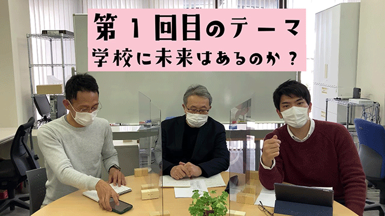

ここのところブログの更新がすっかり滞っています。
思い返せば2014年から不定期ながら教育についてブログという形で発信してきたわけですが、最近文章より直接話すほうが伝わりやすいと感じるようになりました。
…ということで動画を配信することにしました。
伝えたいことはたくさんあります。
今の教育について。親のあり方について。そしてこれからの教育について。
しかし長くブログを書いてきて気づいたのは、教育について語ろうとすることは、社会の構造や人間心理の問題、歴史的背景などを抜きにして語ることはできないということでした。
教育と言うキーワードだけで単独で語れないということです。
ブログでも私は折々、それらの背景的問題をテーマにすることはありましたが、なぜそれが教育に必要なのかうまく説明し切れませんでした。
そこで今後は動画という形で伝えていこうと思います。
動画といっても私が画面の中でひとりボソボソ話しても面白くないのは、去年（4月ごろ）の配信で判明したので少し趣向を変え、学校の先生たちと3人でトークする形で行いたいと思います。
タイトルは「長老カフェ―ぶっちゃけ教育トーク」という少しふざけた感じですが、内容は至ってマジメなものになっています。
現役の教師と元塾講師が本音で教育について語るというのは斬新ではないかと自負しています。
あらかじめ3人で決めたのは、ザックバランにお互い本音で語り合うそれでいて楽しくやるということだけで、テーマもその都度選びながら事前のすり合わせは一切ナシという無謀なものでした。
さっそく第一回目を収録しましたが、事前のすり合わせなしの割りには何とかうまく話せたのではないかと思います。
何より3人のキャラが各々の持ち味をかもし出していて面白く出来上がったと感じます。
是非ご覧いただけたら嬉しいです。
今のところ週１くらいの予定で配信する予定です。
ブログはやらないのかというなら、いまのところしばらくは動画一本で行きたいと考えていますが、先のことは分かりません。
恐らく動画をやっている内に、ここはやはり文章で書いたほうが伝わるのではという点も出てくるのではないかと思っています。
なのでまたブログを補足的に掲載することもあるのだろうなとは感じています。
いずれにしてもこれからも広い意味での教育論を私なりに発信していきたいと思いますのでよろしくお願い致します。